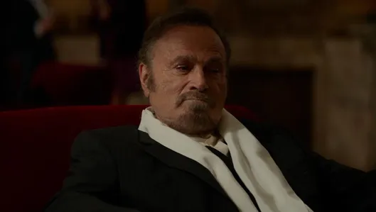
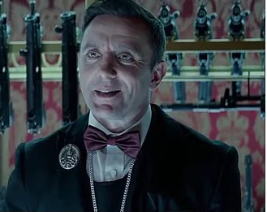

영화 개요
전설적인 킬러, 존 윅이 사랑하는 개와 차를 잃고 복수를 시작한다.
- 감독: 채드 스타헬스키
- 장르: 액션, 범죄, 스릴러
- 개봉: 2017년
영화 소개
업계 최고의 레전드 킬러 ‘존 윅’은 과거를 뒤로한 채 은퇴를 선언하지만, 과거 자신의 목숨을 구했던 옛 동료와 피로 맺은 암살자들의 룰에 의해 로마로 향한다. ‘국제 암살자 연합’을 탈취하려는 옛 동료의 계획으로 ‘존 윅’은 함정에 빠지게 되고, 전세계 암살자들의 총구는 그를 향하는데...

아브람 타라소프
피터 스토메어

줄리어스
프랑코 네로

산티노 디안토니오
리카르도 스카마르초

소믈리에
피터 세레피너위치

지아나 디안토니오
클라우디아 제리니

존윅
키아누 리브스
흥행
국내 존 윅 시리즈의 팬들이 아쉬워하는 것은 영화의 인지도나 완성도에 비해서 국내 극장 흥행이 저조한 것이다. 홀로 다수의 적들을 상대로 무쌍을 펼치는 액션 영화들을 진부해 할 수는 있지만 이런 완성도라면 좀 더 관객들이 찾아줘야 하는 것이 아닌가 의문을 갖는다.